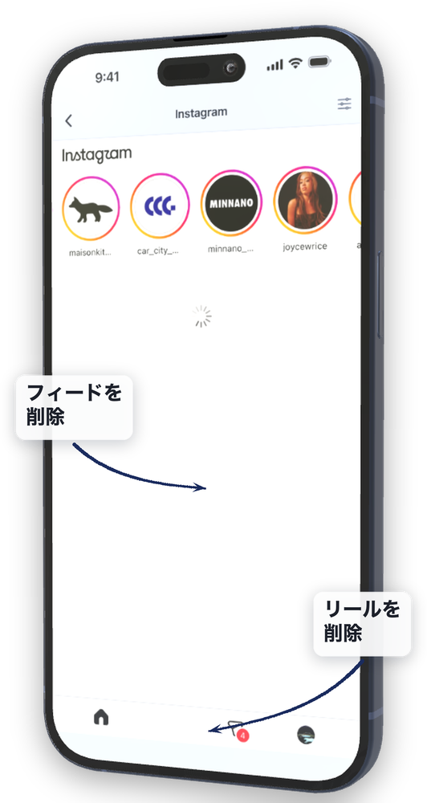
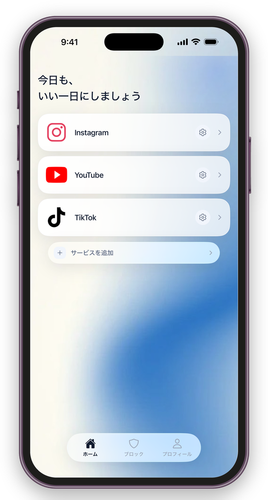
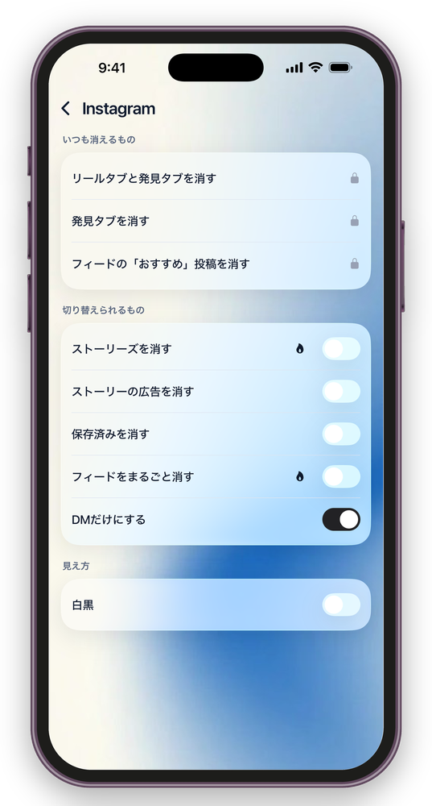
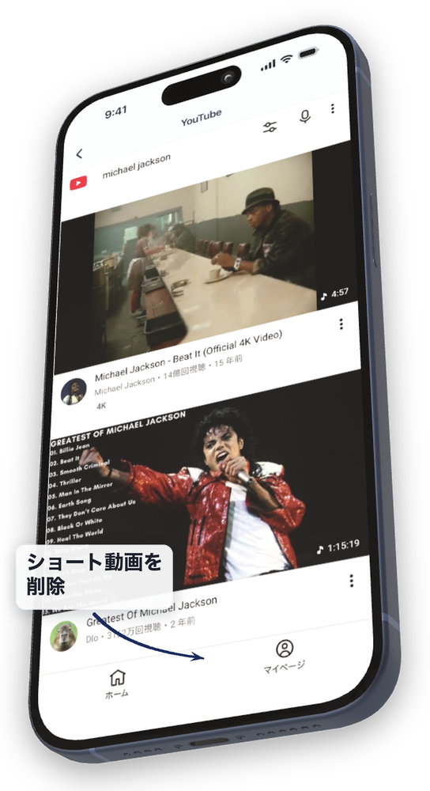

SNSはやめない。
無限スクロールだけをやめる。
DMや友だちとのつながりは、そのまま使えます。
Mac版は macOS 26.5 以降が必要です




DMを確認しただけなのに
用事は30秒で終わったはずなのに、気づけば30分。何を見ていたのかも、あまり思い出せない。
寝る前に、一本だけのつもりが
一本が次の一本を呼び、時計を見たら1時間。明日が早いことは、途中から分かっている。
仕事の合間に開いて、戻れない
5分だけ休憩するつもりだった。それなのに、仕事へ集中し直すまで、さらに時間がかかってしまう。
SNSをやめたいわけではない。仕事にも生活にも必要だから、アプリごと消すことはできない。
消したいのは、自分で選んでいないのに、次々と流れてくるものだけ。
スクリーンタイムやOpalで制限をかけても、連絡が要るときに解除して、そのまま戻ってしまった人へ。
基本の非表示機能は、無料です
有料になるのは、非表示にする機能ではありません。自分で開かなくても始まること、そして解除しにくくすることだけです。
無料
- SNSは何本でも整えられる
- リール、ショート動画、おすすめ投稿、広告の非表示
- DMと通常の閲覧はそのまま
- 元のSNSアプリのロック
- 引き返した記録と、今日の利用時間
有料
- 曜日・時間帯の指定
- ロックモード
基本の非表示機能を、課金しなければ使えない仕組みにはしていません。
非表示にできるもの / そのまま使えるもの
- リール、ショート動画、おすすめ動画
- アルゴリズムが選んだおすすめ投稿
- 発見タブ、探索タブ
- 広告や、広告に近いおすすめ投稿
- ストーリーズ（サービスごとに切り替え）
- DM、メッセージ
- 自分から見に行くプロフィール
- 友だちから送られてきた投稿
- 通常の投稿と返信
- 検索
※ 利用できる機能は、サービスによって異なります。
見えなくする。開きにくくする。
サービスごとに、非表示にするものを選べる
リールやショート動画、発見タブ、フィード内のおすすめ投稿を非表示にできます。さらにサービスごとに、ストーリーズ・広告・保存済み投稿・DMだけを使うモードを切り替えられます（有料）。必要な機能は残しながら、見たくないものだけを減らせます。
元のSNSアプリもロックできる
ホーム画面から元のSNSアプリを開こうとすると、FeedMinusへ戻るように設定できます。「非表示にしたのに、結局いつものアプリを開いてしまう」を防ぐための仕組みです。この機能を利用するには、iPhoneのスクリーンタイム機能へのアクセス許可が必要です。
ロックを解除する前に、ひと呼吸おく
ロックモード中は、ブロックの解除だけでなく、ルールの切り替え・就寝と予定の変更・「5分だけ開く」も止まります。解除には3つのステップが必要で、数分かかります。文章を書き写す。暗算に答える。60秒待つ。目的は解除を不可能にすることではなく、衝動と行動のあいだに、考え直す時間をつくることです。
投稿は FeedMinus の中で
投稿も返信も、FeedMinus の中でそのままできます。仕事や活動のために投稿する必要がある人でも、「投稿だけのつもりが、1時間見ていた」を避けられます。
フィードとショート動画だけが出ない状態で、用事を済ませて閉じられます。
曜日・時間帯を設定
「夜だけ」「平日だけ」など、FeedMinusを有効にする曜日と時間帯を設定できます。
指定した時間になると、自動的にロックが有効になります。
今日の利用時間
今日どれだけ使ったかを表示します。
過去との競争やランキングではなく、今の使い方を確認するための記録です。
パソコンでも、同じ線を引く。
ブラウザのフィードと
ショート動画を消す
Safari・Chrome・Edge・Brave・Arc で、フィードとショート動画を非表示にします。iPhoneでやっていることを、そのまま机の上でも続けられます。
機能拡張を入れる前から効く
機能拡張を入れなくても、振り替え先を決めた時点から働きます。フィードやショート動画の入口を、用事の場所へ振り替えるためです。ブラウザの機能拡張は、あとから足せます。この振り替えには、macOSの「オートメーション」の許可が必要です。
ページの中身を外へ送りません
見ているページの内容が、端末の外へ出ることはありません。保存されるのは、どれを非表示にするかという設定だけです。
macOS 26.5 以降。Appleの公証を受けているので、ダウンロードしてそのまま開けます。
よくある質問
- 無料でどこまで使えますか？
- リール、ショート動画、おすすめ投稿、広告などを非表示にする基本機能は、無料で利用できます。今日の利用時間の確認も無料です。
登録できるサービスの数に制限はありません。元のSNSアプリをロックする機能も無料です。有料なのは、曜日・時間帯の指定、ロックモード、非表示にする項目を自分で選ぶこと、の3つです。 - ログイン情報はどこへ送られますか？
- 各SNSへのログインは、そのSNSが提供するログインページで行われます。FeedMinusの運営者が、IDやパスワードを取得・保存することはありません。
また、FeedMinusには、DMの内容や閲覧履歴を運営者へ送信・保存する機能もありません。 - アプリを削除できなくなりませんか？
- FeedMinus自体は、いつでも削除できます。ロックモードでは、ロックを解除するまでに3つのステップが必要ですが、アプリそのものの削除を妨げる設計にはしていません。
完全に閉じ込めるのではなく、衝動的な解除までに時間をつくるための機能です。 - 仕事でSNSに投稿する必要があります
- 投稿も返信も、FeedMinus の中でそのままできます。フィードとショート動画だけが出ないので、仕事や活動のためにSNSを使う人でも、「投稿だけのつもりが、そのまま1時間見ていた」という状態を避けられます。
- 利用記録はどこに保存されますか？
- 利用記録は、端末内にだけ保存されます。ブロック対象として選択したアプリの情報は、Appleのプライバシー保護機能によって扱われます。
選択内容や利用記録が、FeedMinusの運営者に送信されることはありません。記録は、利用者本人の画面にだけ表示されます。 - 対応していないサービスがあります
- 現在、10のサービスに対応しています（Instagram・YouTube・X・Threads・Pinterest・TikTok・Facebook・Reddit・LinkedIn・Snapchat）。さらに4つのサービスについて、動作確認と対応を進めています。
SNS側の画面や仕様が変更されると、それまで非表示になっていたものが表示されることがあります。その場合は、アプリ内のサポートからお知らせください。確認できたものから順次対応します。